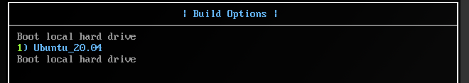

Edge Conductor / Tutorials / Deploy a RKE cluster
Deploy a RKE Cluster
This tutorial will deploy a two-node RKE cluster (one control plane and one worker) with Edge Software Provisioner (ESP) as an OS provider on bare metal by the Edge Conductor tool. Rancher Kubernetes Engine (RKE) is a CNCF-certified Kubernetes distribution that runs entirely within Docker containers. It works on bare-metal and virtualized servers.
Contents
Prerequisites
Edge Conductor kit for RKE
Initialize Edge Conductor Environment
Use ESP as OS provider
Build and Deploy RKE cluster
Check the RKE cluster
What’s Next
Prerequisites
Requirements for the Edge Conductor Day-0 Host
This tutorial will deploy a two-node cluster (one control plane and one worker) with Edge Software Provisioner (ESP) as an OS provider.
For each RKE node, you must add two CPU cores and two gigabytes (GB) of memory. Follow Create VMs for Nodes to set up the nodes.
A clean network environment is needed to enable ESP as an OS provider. Especially ensure the 53 port is not in use.
The path length of Edge conductor is limited to 75 characters as a limitation of ESP. For more details on ESP, please refer to ESP guide.
The Day-0 host should meet the following minimal hardware requirements:
CPU: four or more cores
Memory: four gigabytes (GB) or greater.
Storage: 80 GB or greater.
Internet connection of both: Internet connectivity is required to download and use certain features.
Follow Build and Install the Tool to build and install the Edge Conductor tool.
If there is no public RSA key pair on the host, run the following command and press Enter three times to generate one on the default path.
ssh-keygen
You will see output similar to:
Generating public/private rsa key pair.
Enter file in which to save the key (/home/sysadmin/.ssh/id_rsa):
Created directory '/home/sysadmin/.ssh'.
Enter passphrase (empty for no passphrase):
Enter same passphrase again:
Your identification has been saved in /home/sysadmin/.ssh/id_rsa
Your public key has been saved in /home/sysadmin/.ssh/id_rsa.pub
The key fingerprint is:
...
Create VMs for Nodes
Follow the below steps to set up the network and create VMs for nodes.
configs/extensions/esp_network.yml is to provide ESP network topology for provision. We follow these default values in this network topology and use 10.10.10.1 as the network bridge.
Prepare ESP network Run the virtual bridge setup script to setup the network bridge for node communcation.
cd examples/sample_RKE_cluster/vm_setup
./if_setup.sh
Create virtual machines (VMs) with QEMU hypervisor Run the virtual machines setup script to create two VMs RKE1 and rke2. Each of them will have two CPU cores, two gigabytes (GB) memory and two disks.
./vm_setup.sh .
After this script is finished, run
sudo virsh list --all
You will see output like below:
Id Name State
-----------------------
- RKE1 shut off
- RKE2 shut off
Your VMs are successfully created.
Edge Conductor kit for RKE
We use this example kit to deploy the RKE cluster in this document. Before going to Initialize Edge Conductor Environment, a user must modify the rke_ubuntu_20.04.yml file according to the test environment by following the below steps.
Custom Config
kit config file
Open the Edge Conductor kit config file rke_ubunutu_20.04.yml under this directory.
cd ..
examples/sample_RKE_cluster
├── RKE_ubuntu_20.04.yml
└── vm_setup
├── if_setup.sh
├── template2.xml
├── template.xml
└── vm_setup.sh
Modify the password of the local registry. The Edge Conductor tool will launch a local registry as the storage of binary files, container images and configuration files. This registry password is used to create user authentication.
Parameters:
customconfig:
registry:
password: "<passWord_nnnn>"
Note: The password must be surrounded by double quotes (
"). We recommend that it contains at least eight characters with one lowercase letter, one uppercase letter and one numeric character.
Fill in default_ssh_key_path. This is for ESP to access each node without a password.
default_ssh_key_path:
Note: The default path is /home/username/.ssh/id_rsa.pub
Input HTTP proxy and ESP use this parameter to provision on target node. After ESP provision, the proxy is set on target node.
global_settings:
http_proxy: ""
https_proxy: ""
no_proxy: "127.0.0.1,localhost,10.10.10.0/24,<host IP>"
Note: Need to add host IP to no_proxy
nodes:
- mac: 52:54:00:c3:b1:cb
ip: 10.10.10.11
role:
- controlplane
- etcd
user: sys-admin
ssh_passwd: P@ssw0rd!
- mac: 52:54:00:c3:b1:cc
ip: 10.10.10.21
role:
- worker
user: sys-admin
ssh_passwd: P@ssw0rd!
Note: the MAC addresses and static IP addresses of the nodes in the “Parameters - nodes” config section is inserted according to VMs rke1 and rke2 that were created before. User and ssh_passwd are default values are from ESP. Check more details of the Edge Conductor kit configuration here.
Initialize Edge Conductor Environment
Run the following commands to initialize the Edge Conductor environment:
cd ../../_workspace/
./conductor init -c ../examples/sample_RKE_cluster/rke_ubuntu_20.04.yml
You will see output similar to:
INFO[0000] Init Edge Conductor
INFO[0000] ==
INFO[0000] Top Config File: ../examples/sample_RKE_cluster/rke_ubuntu_20.04.yml
INFO[0000] ext cfg is [esp_network ingress sriov cpu-manager service-tls]
INFO[0000] extension in kit is esp_network
...
INFO[0005] workflow finished
INFO[0005] ==
INFO[0005] Done
Use ESP as OS Provider
This step is to boot VMs and install OS on them by ESP, which gives a complete preparation before the nodes deploy the RKE cluster.
Build ESP
Run the following command to build ESP.
./conductor os-deploy build
You will see output similar to:
INFO[0000] Edge Conductor - Build OS Deployment Services
INFO[0000] ==
INFO[0000] load workflow config file workflow/workflow.yml
INFO[0000] Current workflow: os-deploy-build
...
INFO[0825] Successfully removed esp-build
INFO[0825] Complete Plugin docker-remove
INFO[0825] PluginComplete: plugin docker-remove, res Success
INFO[0825] workflow finished
INFO[0825] ==
INFO[0825] Connecting Plugin docker-remove
INFO[0825] Done
Note: It can take a few minutes to build.
Start ESP services
After ./conductor os-deploy build finishes, the ESP codebase and build result are under runtime/esp.
Run the following commands to start the ESP services:
./conductor os-deploy start
You will see output similar to:
INFO[0000] Edge Conductor - Start OS Deployment Services
INFO[0000] ==
INFO[0000] load workflow config file workflow/workflow.yml
INFO[0000] Current workflow: os-deploy-start
...
INFO[0020] Successfully removed esp-start
INFO[0020] Complete Plugin docker-remove
INFO[0020] PluginComplete: plugin docker-remove, res Success
INFO[0020] workflow finished
INFO[0020] Connecting Plugin docker-remove
INFO[0020] ==
INFO[0020] Done
Check if ESP services are running:
docker ps | grep esp
You should see output like below, which means ESP services are running.
c7ddd211b67f builder-dyn-profile "/usr/local/bin/prof…" 2 minutes ago Up 2 minutes 0.0.0.0:8580->8080/tcp, :::8580->8080/tcp esp_dyn-profile_1
96a2ff6d8baa builder-smb "tini -- /usr/sbin/s…" 2 minutes ago Up 2 minutes 0.0.0.0:445->445/tcp, :::445->445/tcp esp_smb_1
8cf7204d191b builder-squid "/usr/local/bin/init" 2 minutes ago Up 2 minutes 0.0.0.0:3128->3128/tcp, :::3128->3128/tcp, 0.0.0.0:4128->4128/tcp, :::4128->4128/tcp esp_squid_1
40e851b68048 builder-gitea "/usr/local/bin/init…" 2 minutes ago Up 2 minutes 0.0.0.0:222->22/tcp, :::222->22/tcp, 0.0.0.0:3003->3000/tcp, :::3003->3000/tcp esp_mirror_1
804b157c51e5 registry:2 "/entrypoint.sh /etc…" 2 minutes ago Up 2 minutes 0.0.0.0:5557->5000/tcp, :::5557->5000/tcp esp_registry-mirror_1
82aea412af2b builder-web "tini -- /usr/local/…" 2 minutes ago Up 2 minutes 0.0.0.0:80->80/tcp, :::80->80/tcp, 0.0.0.0:443->443/tcp, :::443->443/tcp esp_web_1
d47a62d8980a builder-dnsmasq "/usr/local/bin/init…" 2 minutes ago Up 2 minutes esp_dnsmasq_1
27fdbea30801 builder-core "dumb-init /usr/loca…" 2 minutes ago Up 2 minutes esp_core_1
OS Provisioning for Nodes
Boot the nodes from the ESP network and select the OS profile to be installed.
To do so, run the following commands:
virsh start rke1
virt-manager
After virt-manager pop up, click on rke1 KVM to boot it with ubuntu20.04.

The node will automatically shuts down after the OS provisioning is finished.
Restart the node by running virsh start rke1 again. Do the same to rke2.
Make sure both of them are running:
sudo virsh list --all
Id Name State
----------------------
1 rke1 running
2 rke2 running
Build and Deploy RKE cluster
Run the following command to build RKE cluster:
./conductor cluster build -f
You will see output similar to:
INFO[0000] Edge Conductor - Build Cluster
INFO[0000] ==
INFO[0000] load workflow config file workflow/workflow.yml
INFO[0000] Current workflow: cluster-build
...
INFO[0009] workflow finished
INFO[0009] ==
INFO[0009] Connecting Plugin docker-image-downloader
INFO[0009] Done
Run the following command to deploy RKE cluster:
./conductor cluster deploy
You will see output similar to:
INFO[0000] Edge Conductor - Deploy Cluster
INFO[0000] ==
INFO[0000] load workflow config file workflow/workflow.yml
INFO[0000] Current workflow: cluster-deploy
...
INFO[0009] workflow finished
INFO[0009] ==
INFO[0009] Done
The kubeconfig is copied to the default path ~/.kube/config.
NOTE: If you export KUBECONFIG, you need to unset the KUBECONFIG or copy
~/.kube/configto your KUBECONFIG directory.
Check the RKE cluster
Run the following commands to check the nodes that are available and the services deployed to the RKE cluster:
kubectl get pods,svc,nodes -A
You will see output similar to:
NAMESPACE NAME READY STATUS RESTARTS AGE
kube-system pod/calico-kube-controllers-5b7b46d45-4bkfv 1/1 Running 0 19h
kube-system pod/canal-cp8lb 2/2 Running 0 19h
kube-system pod/canal-lwvzm 2/2 Running 0 19h
kube-system pod/coredns-75976ff947-mtplk 1/1 Running 0 19h
kube-system pod/coredns-autoscaler-7b7db64749-grz96 1/1 Running 0 19h
kube-system pod/metrics-server-5d6894f4fd-h7w4w 1/1 Running 0 19h
kube-system pod/rke-coredns-addon-deploy-job-kx2f2 0/1 Completed 0 19h
kube-system pod/rke-metrics-addon-deploy-job-nmpq7 0/1 Completed 0 19h
kube-system pod/rke-network-plugin-deploy-job-nfgcb 0/1 Completed 0 19h
NAMESPACE NAME TYPE CLUSTER-IP EXTERNAL-IP PORT(S) AGE
default service/kubernetes clusterIP 10.43.0.1 <none> 443/TCP 19h
kube-system service/kube-dns clusterIP 10.43.0.10 <none> 53/UDP,53/TCP,9153/TCP 19h
kube-system service/metrics-server clusterIP 10.43.112.248 <none> 443/TCP 19h
NAMESPACE NAME STATUS ROLES AGE VERSION
node/10.10.10.11 Ready controlplane,etcd 19h v1.23.6
node/10.10.10.21 Ready worker 19h v1.23.6
Be sure the status for all pods is Running.
What’s Next
Congratulations! You have deployed a RKE cluster with the Edge Conductor tool!
Next Tutorial: Example: Hello cluster!
Back to: Edge Conductor Basics
Copyright (C) 2022 Intel Corporation
SPDX-License-Identifier: Apache-2.0